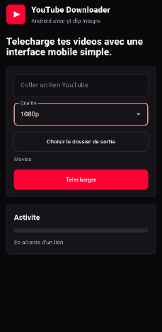

Interface YouTube
Theme rouge, noir et blanc, logo d'application et mode plein ecran.
Desktop et Android yt-dlp
Une application au style YouTube pour telecharger des videos avec yt-dlp, choisir la qualite, definir le dossier de sortie et suivre la progression en direct sur bureau comme sur Android.
L'outil garde l'essentiel visible : lien, qualite, dossier de sortie, progression et messages d'activite.
Theme rouge, noir et blanc, logo d'application et mode plein ecran.
Le paquet compile embarque yt-dlp, ffmpeg et ffprobe pour eviter les erreurs de version ou de prerequis.
Distribution en DEB, RPM et archive portable pour installer rapidement l'application.
APK Flutter avec yt-dlp, ffmpeg, choix du dossier et mise a jour automatique de yt-dlp.
La version mobile reprend l'essentiel de l'application desktop : lien YouTube, choix de qualite, dossier de sortie et progression.

Collez un lien, choisissez la qualite, selectionnez un dossier et lancez le telechargement depuis une interface mobile simple. L'APK embarque yt-dlp et ffmpeg, puis tente de mettre yt-dlp a jour avant le telechargement.
Le selecteur Android permet de choisir ou enregistrer les videos.
L'app tente de mettre yt-dlp a jour avant chaque telechargement pour limiter les erreurs de version trop ancienne.
La commande flutter build apk --release cree le fichier Android pret a installer.
Les liens ci-dessous utilisent la derniere release GitHub.

Installe l'application comme paquet systeme sur les distributions compatibles DEB.
youtube-downloader_1.0.0_amd64.deb
Telecharger DEB

Paquet RPM pour Fedora et distributions compatibles.
youtube-downloader-1.0.0-1.fc44.x86_64.rpm
Telecharger RPM

Archive avec l'executable compile, utile pour tester sans installer de paquet.
youtube-downloader-1.0.0-linux-x86_64.tar.gz
Telecharger TAR.GZ
Installateur Windows avec l'application, yt-dlp, ffmpeg, ffprobe et le logo integres.
YouTubeDownloaderSetup.exe
Telecharger Windows

APK Flutter avec yt-dlp, ffmpeg, choix du dossier de sortie et logo integres.
youtube-downloader-1.0.0-0.apk
Telecharger APK
Les paquets desktop doivent etre compiles sur chaque OS pour embarquer les bons binaires ffmpeg.
L'installateur Windows doit etre compile depuis Windows avec PyInstaller et Inno Setup.
L'APK Android se compile depuis le dossier mobile/ avec Flutter.